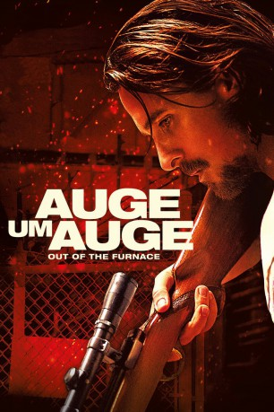

gesehen am 07.07.2016
gesehen am 07.07.2016Alternativ: Out of the Furnace gesehen am 07.07.2016
 
 IMDB-Wertung: 6.8 / 10
IMDB-Wertung: 6.8 / 10  Metascore:
Metascore: 
Die Brüder Russell und Rodney Baze leben in der Industrieregion Rust Belt. Die Wirtschaftskrise macht ihnen zu schaffen. Sie träumen davon, eines Tages aus dem Alltagstrott auszubrechen und ein besseres Leben zu führen. Doch dann landet Russell hinter Gittern. Sein jüngerer Bruder schließt sich einer brutalen Gang an. Nachdem Russell wieder auf freiem Fuß ist, muss er sich entscheiden. Will er seine eigene Freiheit oder will er Gerechtigkeit für seinen kleinen Bruder?
Jahr: 2013
Dauer: 116 Minuten
FSK: 16
Land: USA Studio: Relativity MediaTonspuren: DTS - ,
Untertitel: Englisch,
Auflösung: 1080p (1920x800) Größe: 11468 MB
Regisseur: Scott Cooper
Drehbuch: Brad Ingelsby, Scott Cooper
Soundtrack: Dickon Hinchliffe
Darsteller:
 Woody Harrelson als Harlan DeGroat
Woody Harrelson als Harlan DeGroat Dendrie Taylor als DeGroat's Date
Dendrie Taylor als DeGroat's Date Carl Ciarfalio als Man at Drive In
Carl Ciarfalio als Man at Drive In Christian Bale als Russell Baze
Christian Bale als Russell Baze Casey Affleck als Rodney Baze Jr.
Casey Affleck als Rodney Baze Jr. Zoe Saldana als Lena Taylor
Zoe Saldana als Lena Taylor Sam Shepard als Gerald 'Red' Baze
Sam Shepard als Gerald 'Red' Baze Tom Bower als Dan Dugan
Tom Bower als Dan Dugan Willem Dafoe als John Petty
Willem Dafoe als John Petty Charles David Richards als Chaplain
Charles David Richards als Chaplain Forest Whitaker als Chief Wesley Barnes
Forest Whitaker als Chief Wesley Barnes Boyd Holbrook als Tattooed Guy
Boyd Holbrook als Tattooed Guy Jack Erdie als Meth Guy
Jack Erdie als Meth Guy Gordon Michaels als Bergen County Officer
Gordon Michaels als Bergen County Officer Todd Bobenrieth als Steel Worker , uncredited
Todd Bobenrieth als Steel Worker , uncredited Dicky Eklund Jr. als Dealer Friend , uncredited
Dicky Eklund Jr. als Dealer Friend , uncredited Joe Fishel als Prison Guard , uncredited
Joe Fishel als Prison Guard , uncredited Vito Grassi als Gang Member , uncredited
Vito Grassi als Gang Member , uncredited William Kania als Bar Patron , uncredited
William Kania als Bar Patron , uncredited Mark Kubr als SWAT Team , uncredited
Mark Kubr als SWAT Team , uncredited Efka Kvaraciejus als Brady , uncredited
Efka Kvaraciejus als Brady , uncredited Tiffany Sander McKenzie als Civilian , uncredited
Tiffany Sander McKenzie als Civilian , uncredited Phil Nardozzi als Civilian , uncredited
Phil Nardozzi als Civilian , uncredited Brenna Roth als Meth Girl , uncredited
Brenna Roth als Meth Girl , uncredited Aaron Toney als Jerome , uncredited
Aaron Toney als Jerome , uncredited Mike Walker als Russell Baze's Prison Guard , uncredited
Mike Walker als Russell Baze's Prison Guard , uncreditedDatei: X:\2013(A-F)\Auge um Auge - Out of the Furnace (2013, FSK16, 1920x800).mkv seit 27.08.2015
Festplatte: HD 2012(N-Z)-2013(A-H)
 Es gibt insgesamt 127 Filme in der Gruppe '2013(A-F)'
Es gibt insgesamt 127 Filme in der Gruppe '2013(A-F)'